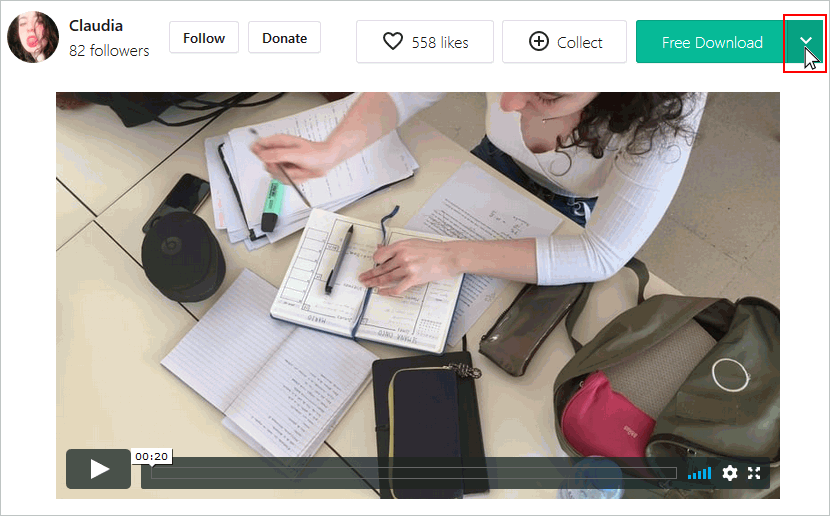
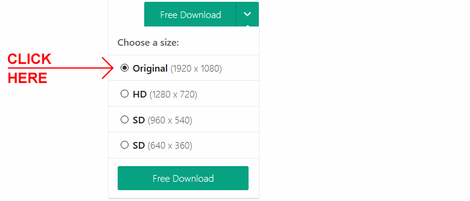
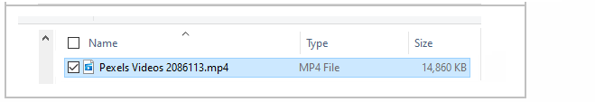
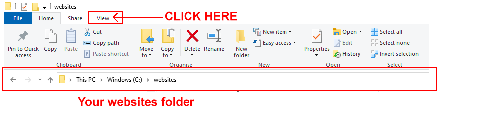
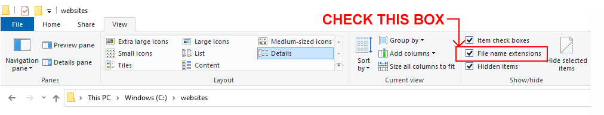
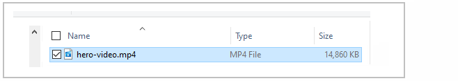
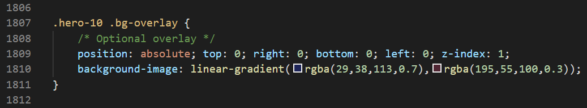
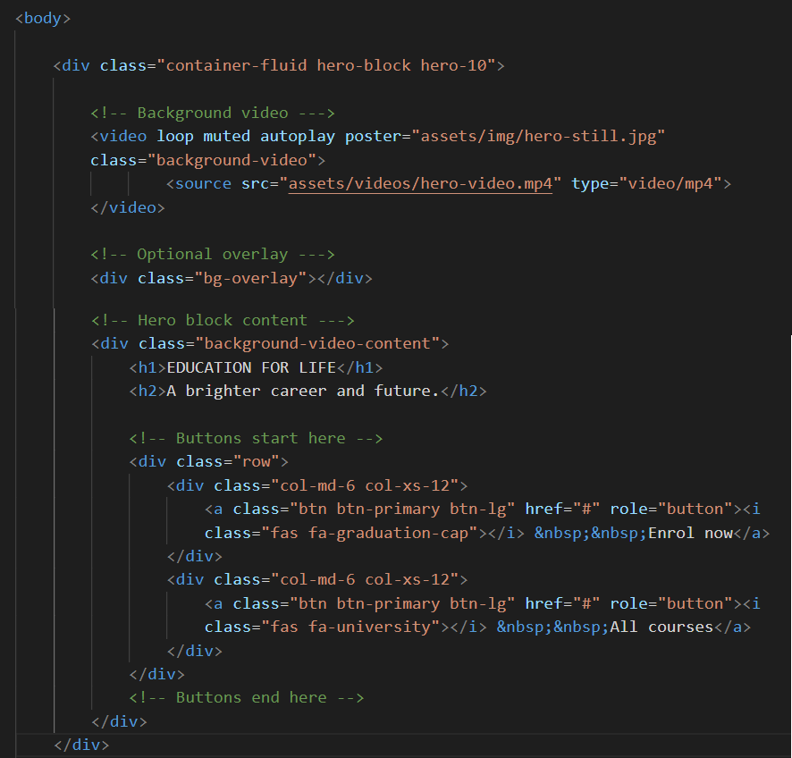

Learning Goals
At the end of this Tutorial you will be able to:
- Add a backgound video to the hero block in a web page.
Downloading the sample files
In this exercise, you will work with the following two files, a web page and a stylesheet:
- hero-video.html: Click this link to open the web page in a new tab of your web browser.
Right-click anywhere in the web page and choose Save as... (Chrome) or Save Page As... (Firefox) from the context menu displayed.
Save the web page in the bootstrap sub-folder of your websites folder with the name hero-video.html
Ensure the Save as type: dropdown list is set to Webpage, HTML only (*.HTML, *.htm).
You can close the browser tab containing the hero-video.html web page.
- hero-video.css: Click this link to open the stylesheet file in a new tab of your web browser.
Right-click anywhere in the browser window, and from the context menu, choose Save as... (Chrome) or Save Page As... (Firefox).
Save the hero-basic.css stylesheet file to your websites/bootstrap/assets/css sub-folder.
Ensure the Save as type: dropdown list is set to the correct file type.
You can close the browser tab containing the hero-video.css stylesheet.
You have now saved the two files you need for this exercise.
Next, in your bootstrap/assets sub-folder, create a new sub-folder named videos.
Downloading the background video
Your next step is to download a free-to-use video from the Pexels website.
- Click the link below to open a new web browser tab that offers a video for download.
Girl Writing on Her Notebook
- At the top right of the screen, click the arrow at the right of the Free Download button.

-
- For the video resolution, click the Original (1920 x 1080) option.

And then click the Free Download button.
- Copy the downloaded video to your bootstrap/assets/videos sub-folder.
- In File/Windows Explorer, you can see the video file is named Pexels Videos 2086113.mp4.
This is the so-called full name of the file. It consists of the base file name (Pexels Videos 2086113), a full stop and the file name extension (mp4).

If you are using Windows 10, by default you will only see the base file name of Pexels Videos 2086113.
To change this for all files in your websites folder, follow these steps:
- In File/Windows Explorer, display all the sub-folders and files in your websites folder.
- In the menu at the top of the screen, click the View option.

- You are now shown a new ribbon of options. Check the box named File name extensions.

For all files in your websites folder, you will in future be shown the full file name that includes the filename extension.
- As a final step, rename the video file to hero-video.mp4.

You are now ready to work with the downloaded and renamed video.
Embedding the video in the HTML page
Follow these steps to embed the video file in your web page.
- In VS Code, display the hero-video.html file.
- Scroll down to the end.
In the <div> block named hero-10, you can see three comment lines to guide you in working with the hero block content, overlay and background video.
- Under the first comment line of “Background video”, copy-and-paste the following HTML.
<video loop muted autoplay poster="assets/img/hero-still.jpg" class="background-video">
<source src="assets/videos/hero-video.mp4" type="video/mp4">
</video>
Here you set the file name and folder location of the video you want to use as a background, along with some other properties and values.
- Under the second comment line of “Optional overlay”, copy-and-paste the following HTML.
<div class="bg-overlay"></div>
This allows you to include a tinted overlay, if required, to make the text content easier-to-read against the video background.
If you open the hero-video.html file for this project in VS Code, you can see the following values has been set for the overlay:

- The overlay colour changes from blue (RGB of 29,38,113) at the top to brown (RGB of 195,55,100) at the bottom.
- The opacity of the overlay, represented by the letter A (for Alpha channel) decreases from 0.7 at the top to 0.3 at the bottom.
- Under the third comment line of “Hero block content” is the text the text content that appears in front of the background video (and also in front of the optional overlay). It typically includes a heading, sub-heading and one or two buttons.
- When finished, save your hero-video.html file.
Your web page file should now look as shown below.

In your web browser, reload and view your hero-video.html web page on desktop/laptop and mobile screens. The background video should play continuously.
That’s it. You have now completed this exercise.
Return to Contents.